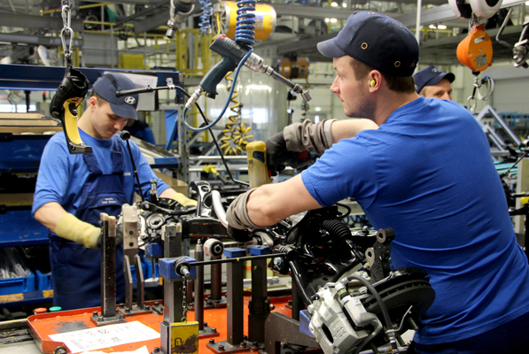
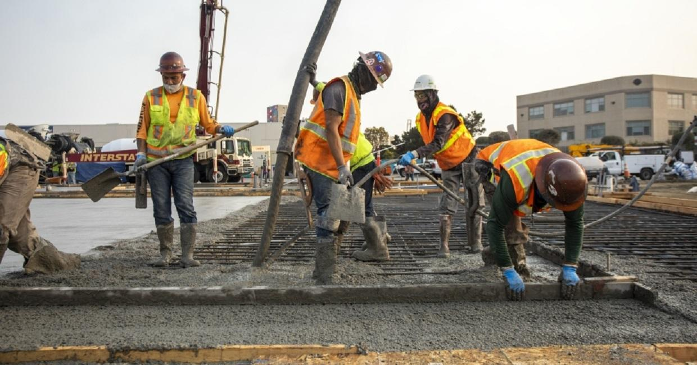

Activity: Hulaan ang Salita
Hulaan ang mga salita na may kinalaman sa industriya upang mabuksan ang Ikatlong Aralin.




Hulaan ang mga salita na may kinalaman sa industriya upang mabuksan ang Ikatlong Aralin.


Ang sektor ng industriya ay tumutukoy sa pagproseso ng mga hilaw na materyales upang makagawa ng mga produktong ginagamit ng tao.
Pagmimina: Pagkuha at pagproseso ng mga yamang mineral (metal, di-metal, o enerhiya) upang gawing tapos na produkto o kabahagi ng isang yaring kalakal.
Ang mismong produkto, hilaw man o naproseso, ay nagbibigay ng kita para sa bansa.
Pagmamanupaktura: Paggawa ng mga produkto sa pamamagitan ng manual labor o makina.
Nagkakaroon ng pisikal o kemikal na transpormasyon ang mga materyal o bahagi nito sa pagbuo ng bagong produkto.
Konstruksyon: Pagtatayo ng mga gusali, estruktura, at iba pang land improvements.
Utilities: Pagtugon sa pangunahing pangangailangan ng mamamayan tulad ng tubig, kuryente, at gas.
Paglalatag ng imprastraktura at angkop na teknolohiya upang maihatid ang serbisyo.
Tumatanggap ng mga produkto mula sa sektor ng agrikultura at serbisyo mula sa sektor ng paglilingkod.
Nagkakaloob ng hanapbuhay sa maraming Pilipino.
Nagpapasok ng dolyar sa bansa.
Nakagagamit ng makabagong teknolohiya.
Gumagawa ng mga intermediate products na ginagamit sa paggawa ng iba pang produkto.
Nagmumula sa agrikultura ang mga hilaw na sangkap para sa mga produkto ng industriya.
Ang mga ginagamit na traktora, sasakyang pangingisda, at iba pang produkto ay mula sa industriya at ginagamit ng mga magsasaka.
Ang dami ng lakas-paggawa sa mga mamimili ay nagpapakita ng pagtutulungan ng sektor ng industriya at agrikultura.
Ang agrikultura ang pinagmumulan ng pagkain ng mga industriya.
Ang industriya ang nagbibigay ng malaking kontribusyon sa ekonomiya.
Ang mga sangkap ay nagkakaroon ng transpormasyon dahil sa mga manggagawa na gumagawa upang madagdagan ang halaga nito.
Cottage Industry (Industriyang Pantahanan): Maliit, kadalasang ginawa sa tahanan o maliit na workshop. Produkto ay handmade gamit ang lokal na materyales.
Manggagawa: Miyembro ng pamilya o iilang tao.
Kapital: Napakababa at simple.
Halimbawa: Paggawa ng bagoong, paghahabi, basket, wood carving, pandekorasyon.
Small Scale Industry (Maliit na Industriya): Negosyong mas malaki sa cottage industry ngunit hindi aabot sa laki ng korporasyon. Gumagamit ng makinarya o kuryente.
Manggagawa: 10-99.
Kapital: Katamtaman (P1 milyon - P10 milyon).
Lokasyon: Urban center o industrial estate.
Halimbawa: Bakery, paggawa ng sapatos, garments, muwebles.
Large Scale Industry (Malaking Industriya): May malaking kapital, advanced na teknolohiya o makinarya, malawakan ang produksyon.
Manggagawa: Daan-daan o libu-libong manggagawa.
Kapital: Napakalaki para sa makinarya at planta.
Produksyon: Mass production.
Halimbawa: Steel plants, planta ng sasakyan, oil refineries, malalaking textile mills.
Pondo at kompetisyon.
Paghina ng lokal na industriya.
Demand.
Filipino First Policy: Nagsimula sa programang Filipino Muna ni Pangulong Carlos P. Garcia. Naglalayong bigyan ng higit na partisipasyon ang mga Pilipino sa pagpapatakbo ng ekonomiya.
Oil Deregulation Law (Batas Republika 8479): Nagbukas ng kompetisyon sa industriya ng langis. Ang pamilihan ang nagdidikta sa presyo ng petrolyo.
Patakaran ng Microfinancing: Serbisyong pinansiyal ng mga bangko na may mababang interes sa mahihirap na pamilya.
Patakaran sa Online Business: Online shopping o retailing, online intermediary service, online advertisement, online auction.
Retail Nationalization Act of 1964 (Batas Republika 1180): Sampung taong palugit sa dayuhang kapitalista. Pilipino lamang ang maaaring magpatakbo.
Retail Trade Liberalization Act of 2000 (Batas Republika 8762): Binuksan ang kalakalang pagtitingi sa mga dayuhan.
Build-Operate-Transfer (Batas Republika 6957): Binibigyan ng karapatang bumuo ng pasilidad gamit sariling pondo.
Asset Privatization Trust: Pamahalaan nagbenta ng mga korporasyon sa pribadong sektor. Pinasimula ni Pangulong Corazon Aquino.
Department of Trade and Industry: Tinututukan ang larangan ng industriya at pangangalakal.
Board of Investments: Tinutulungan ang nagsisimulang industriya at humihikayat sa mga dayuhang mamumuhunan.
Philippine Economic Zone Authority: Tumutulong sa mga mamumuhunan na makahanap ng lugar para sa negosyo.
Securities and Exchange Commission: Nagtatala at nagrerehistro sa mga kompanya sa bansa.